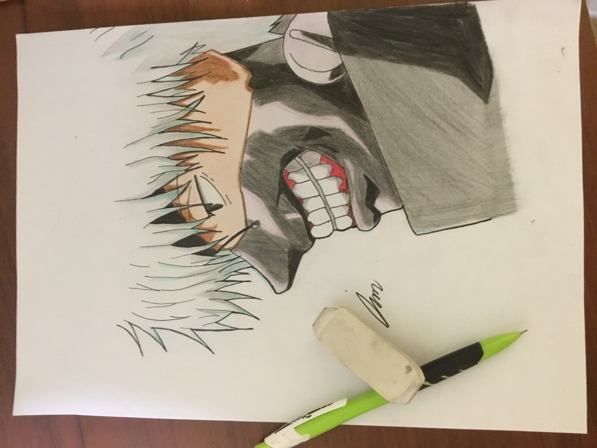

This is my avatar for my art career and this was made digitally using Ibis Paint.

This was made digitally using Ibis Paint, its about happiness amidst from pain
Traditional Art, A Venom inspired fanart, this was made using a normal A4 paper and drawn by sketching pencils

Traditional Art, A Spider-man inspired fan art, this was made using a4 paper and drawn by sketching pencils

Traditional Art, Kaneki ken fanart, was drawn with a normal hb mechanical pencil, colored with faber castle(Colored Graphite Pencil)

This was drawn Digitally using Ibis Paint

This was made with Ibis Paint, It is titled as "Clever King"

This was made with using Ibis paint and it was for nutrition month

This was made using Ibis Paint and Title as "The Drop"